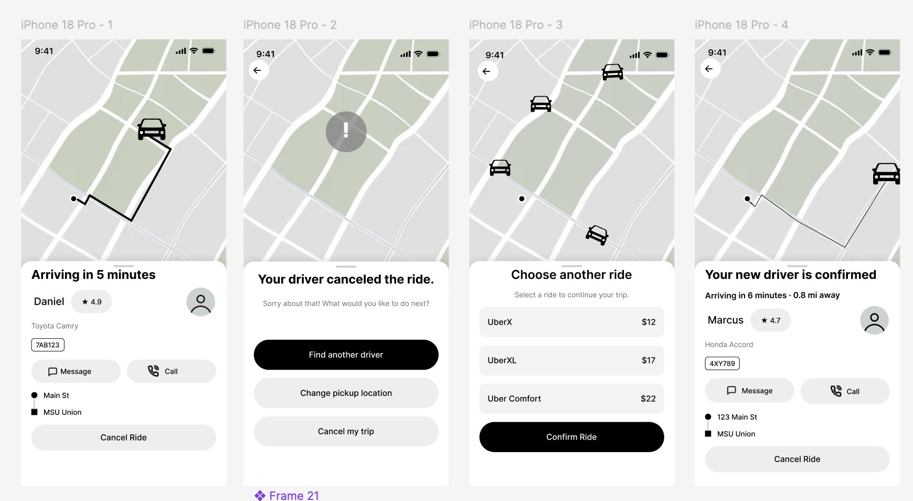
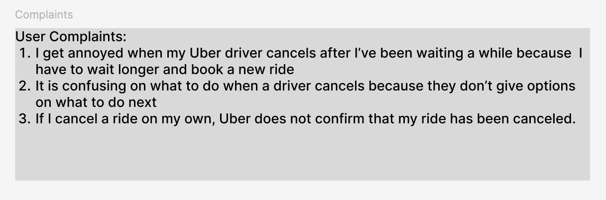
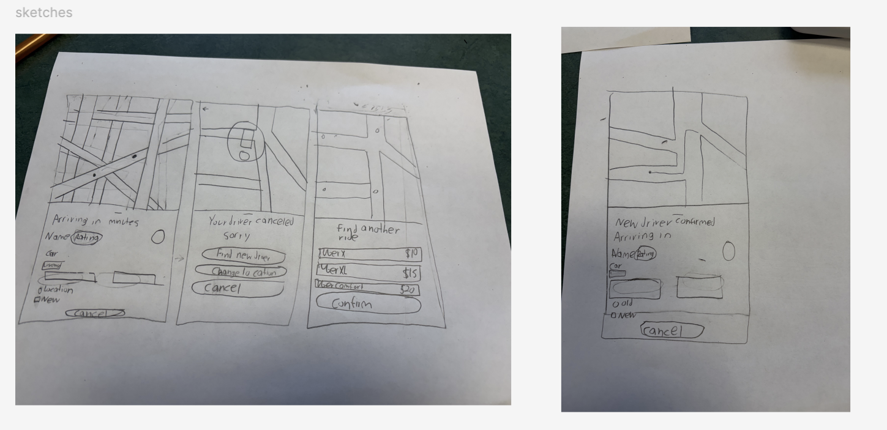

UX/UI DESIGN · MOBILE APP
Creating a more transparent and user-friendly cancellation experience.
UX/UI Designer
Figma
App Redesign

01 / OVERVIEW
The task of this project was to pick part of an app that annoys users and improve user flow of the app. I choose uber because when a rdie gets canceled, it does not give the user more options.
02 / THE CHALLENGE
One of the frustrating parts of using Uber is that drivers can cancel your ride, sometimes leaving you waiting and having to start the process over. I wanted to explore how the app could make cancellations clearer and give users a better idea of what is happening, instead of leaving them feeling confused or stuck.

03 / DESIGN PROCESS
I explored different ways to organize the cancellation flow, communicate important information, and give users clearer choices.

04 / FINAL DESIGN
My final design focuses on making the cancellation process easier to follow and giving users more control over their experience. I brought my ideas together into a clickable prototype to show how the redesigned screens would work together and how a user would move through the app.
05 / REFLECTION
This project made me think about how even small changes in an app can make a difference in how someone uses it. I learned to look beyond just how a screen looks and think about what the user actually needs, especially when something isn't going as expected. It also gave me more experience using Figma to turn an idea into an interactive design.